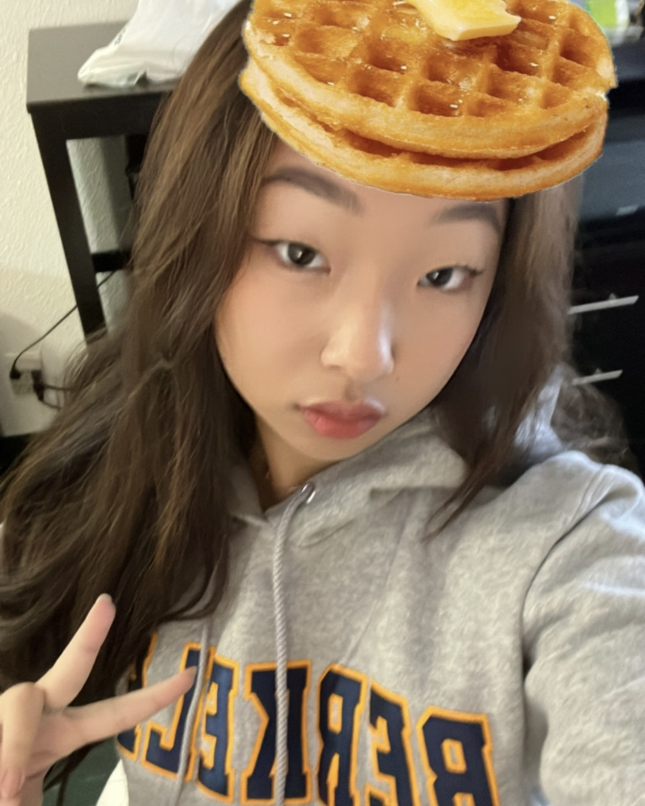

Jamie Kim
Media Studies Major | 1st year
Heyy! I'm Jamie and I am currently a freshman at UC Berkeley intending to study Media Studies. I love watching movies, my favorites being La La Land and Howl's Moving Castle, as well as doing art, graphic design, listening to movie scores or kpop, running, eating food, and talking with friends. I am so excited to be learning here as well as exploring the world of web design to better help my career skills.
Here are my favorite places to eat at home:
- Baekjeong Korean BBQ
- Cafe BT
- Youngdong Tofu House

Monkeytype
- 1. I learned that the design of an app can really direct a user's experience and emphasize what content is important and what function or purpose the app is trying to achieve. This can include what text is used, the bold and italics of the text, image sizes, placement of features, and more.
- 2. My favorite part was breaking down observations made for each app. Specifically for Airbnb, the layout of the content really encourages the user to explore what else the app has to offer upon arrival.
- 3. "You develop your design eye by thinking as if you were the designer of a product."
- 4. 8